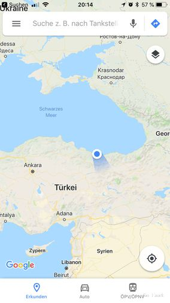
Ordu
The Hotel Akgün in Cerkes is very convenient. We pay 60 TL for a room with breakfast (about 11, - EUR).
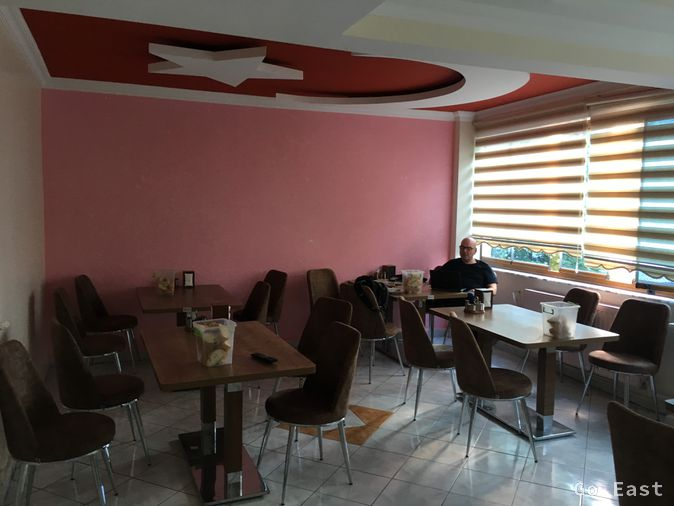
Breakfast room with patriotic equipment
We find out that several maps were superimposed in Charlie's navigation system and so it came to misinformation. That had caused us to lose eachother.
At 10:00 we leave again for Samsun. At first we are still relatively high at 1,000m (3,280 ft), which keeps the temperature at about 25 degrees celsius (77 F). The lower we get down, the hotter it gets. We drive on the D-100 which is an excellently developed motorway.
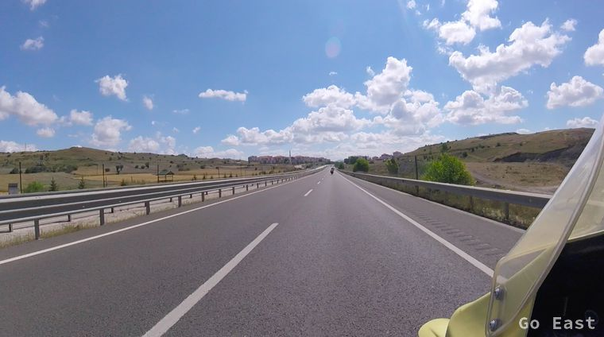
on the road
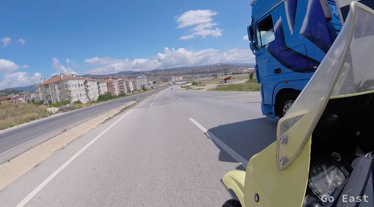
on the road
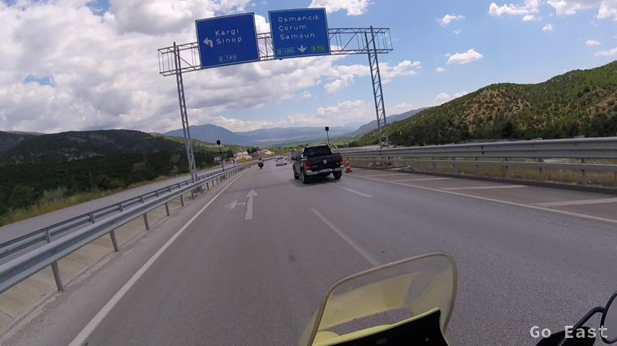
on the road
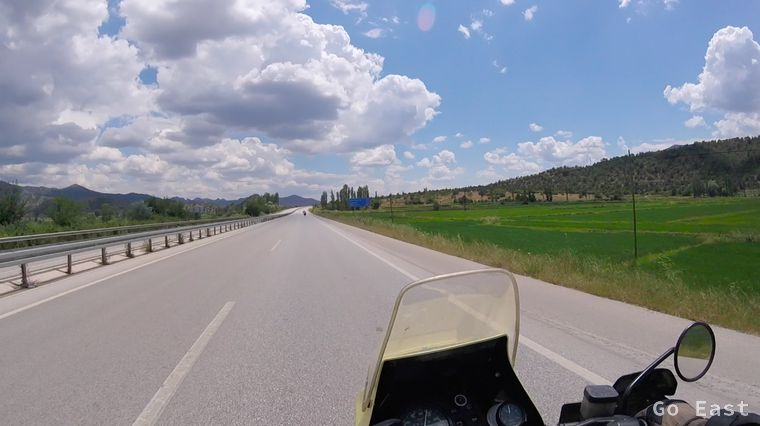
on the road
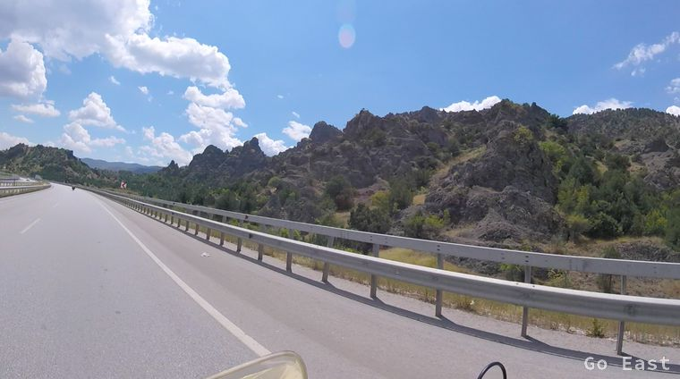
on the road
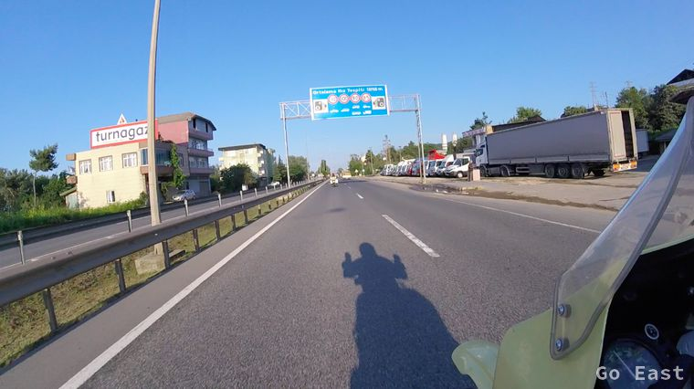
on the road
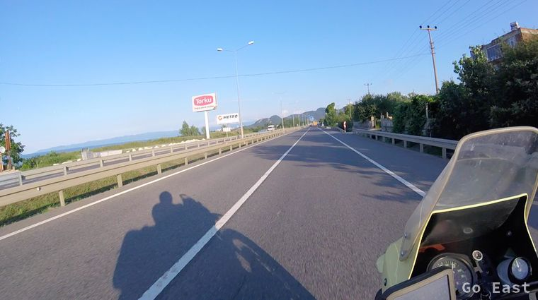
on the road
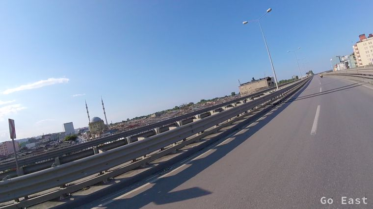
on the road
Every now and then tea and roasted corn are offered on the roadside on small stoves with a fireplace. The traffic is very minimal. The landscape is impressive and conveys a very interesting depth with the high mountains and wide valleys.
In a small village we take a break to have a drink. We listen to music and Charlie takes pictures of the preparations for the circumcision festival.
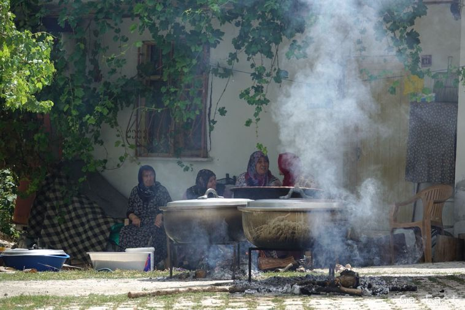
family fest
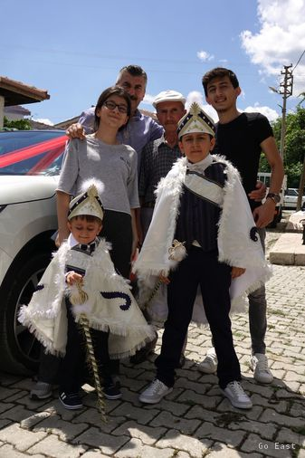
family fest
In Gümüshacikoy we stop to have something to eat. Bekir from Germersheim, who works at Daimler in Rastatt, speaks to us and shows us where to eat and translates for us. We enjoyed eating plenty of lentil soup, kofte (small hamburger) and chicken kebab with fries and salad. We drank water and tea all for the equivalent of under 10, - € for 2! Feeling good we took to the road again, but after a 15 minute drive we realized we needed first another break and half an hour sleep on the rest area to digest all that food!
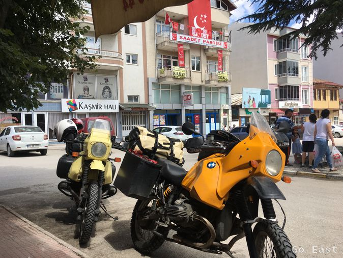
Rest in Gümüshacikoy
At the gas station is fueled and used the car wash. When maneuvering, Charlie's kickstand breaks off and we tie it up tentatively.
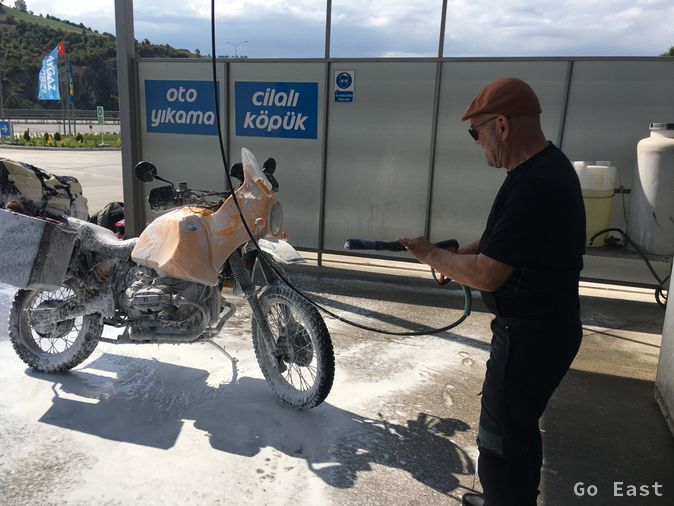
washing action
Continue on Samsun by the sea to Ordu, where we bill over Booking.com into the Wyspy Hotel. At the reception they give us tips where you can eat well and where necessary, where the kickstand can be welded. We take a taxi and drive out to a restaurant on the coast where we have dinner.